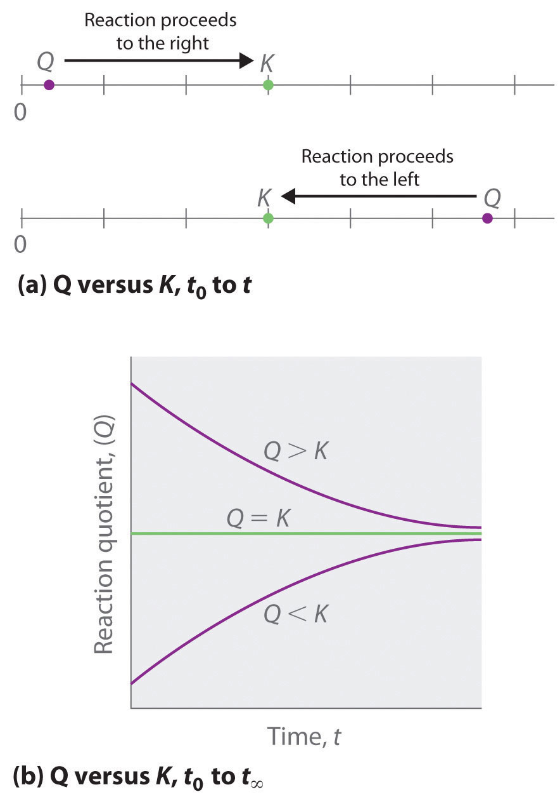
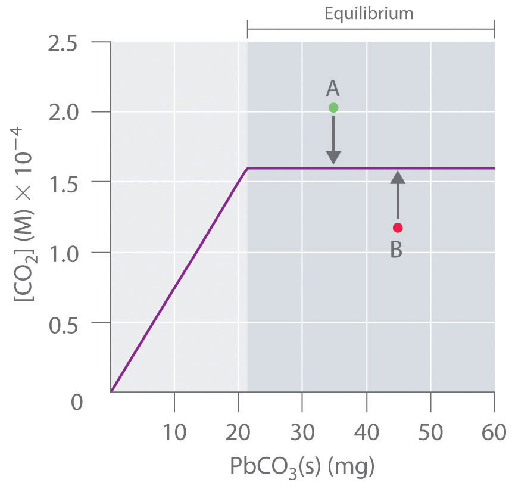
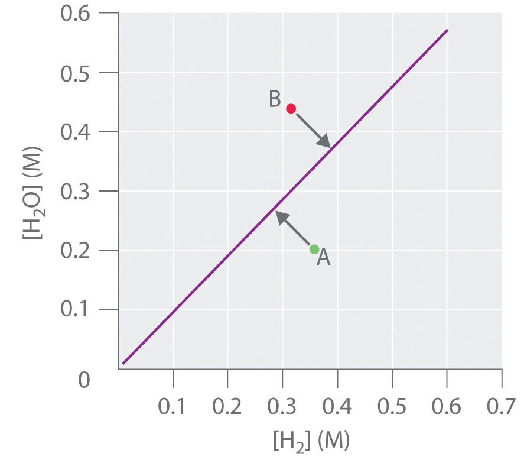
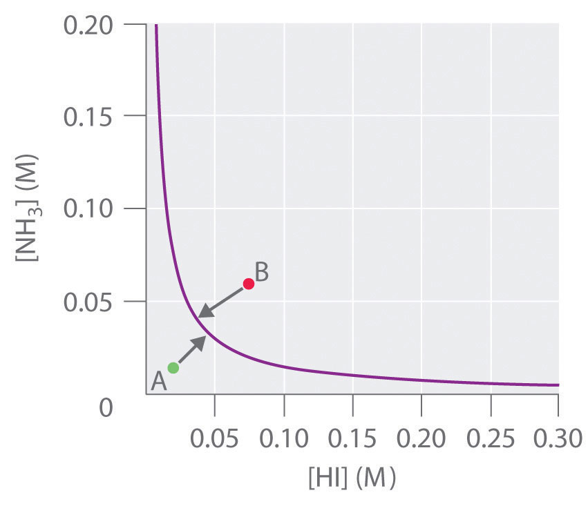

In Section 15.3 "Solving Equilibrium Problems", we saw that knowing the magnitude of the equilibrium constant under a given set of conditions allows chemists to predict the extent of a reaction. Often, however, chemists must decide whether a system has reached equilibrium or if the composition of the mixture will continue to change with time. In this section, we describe how to quantitatively analyze the composition of a reaction mixture to make this determination.
To determine whether a system has reached equilibrium, chemists use a quantity called the reaction quotient (Q)A quantity derived from a set of values measured at any time during the reaction of any mixture of reactants and products, regardless of whether the system is at equilibrium: for the general balanced chemical equation . The expression for the reaction quotient has precisely the same form as the equilibrium constant expression, except that Q may be derived from a set of values measured at any time during the reaction of any mixture of the reactants and the products, regardless of whether the system is at equilibrium. Therefore, for the following general reaction:
the reaction quotient is defined as follows:
Equation 15.28
The reaction quotient (Qp)A quantity derived from a set of values measured at any time during the reaction of any mixture of reactants and products in the gas phase, regardless of whether the system is at equilibrium: for the general balanced chemical equation , which is analogous to Kp, can be written for any reaction that involves gases by using the partial pressures of the components.
To understand how information is obtained using a reaction quotient, consider the dissociation of dinitrogen tetroxide to nitrogen dioxide, , for which K = 4.65 × 10−3 at 298 K. We can write Q for this reaction as follows:
Equation 15.29
The following table lists data from three experiments in which samples of the reaction mixture were obtained and analyzed at equivalent time intervals, and the corresponding values of Q were calculated for each. Each experiment begins with different proportions of product and reactant:
| Experiment | [NO2] (M) | [N2O4] (M) | Q = [NO2]2/[N2O4] |
|---|---|---|---|
| 1 | 0 | 0.0400 | |
| 2 | 0.0600 | 0 | |
| 3 | 0.0200 | 0.0600 |
As these calculations demonstrate, Q can have any numerical value between 0 and infinity (undefined); that is, Q can be greater than, less than, or equal to K.
Comparing the magnitudes of Q and K enables us to determine whether a reaction mixture is already at equilibrium and, if it is not, predict how its composition will change with time to reach equilibrium (i.e., whether the reaction will proceed to the right or to the left as written). All you need to remember is that the composition of a system not at equilibrium will change in a way that makes Q approach K. If Q = K, for example, then the system is already at equilibrium, and no further change in the composition of the system will occur unless the conditions are changed. If Q < K, then the ratio of the concentrations of products to the concentrations of reactants is less than the ratio at equilibrium. Therefore, the reaction will proceed to the right as written, forming products at the expense of reactants. Conversely, if Q > K, then the ratio of the concentrations of products to the concentrations of reactants is greater than at equilibrium, so the reaction will proceed to the left as written, forming reactants at the expense of products. These points are illustrated graphically in Figure 15.6 "Two Different Ways of Illustrating How the Composition of a System Will Change Depending on the Relative Values of ".
Figure 15.6 Two Different Ways of Illustrating How the Composition of a System Will Change Depending on the Relative Values of Q and K
(a) Both Q and K are plotted as points along a number line: the system will always react in the way that causes Q to approach K. (b) The change in the composition of a system with time is illustrated for systems with initial values of Q > K, Q < K, and Q = K.
If Q < K, the reaction will proceed to the right as written. If Q > K, the reaction will proceed to the left as written. If Q = K, then the system is at equilibrium.
At elevated temperatures, methane (CH4) reacts with water to produce hydrogen and carbon monoxide in what is known as a steam-reforming reaction:
K = 2.4 × 10−4 at 900 K. Huge amounts of hydrogen are produced from natural gas in this way and are then used for the industrial synthesis of ammonia. If 1.2 × 10−2 mol of CH4, 8.0 × 10−3 mol of H2O, 1.6 × 10−2 mol of CO, and 6.0 × 10−3 mol of H2 are placed in a 2.0 L steel reactor and heated to 900 K, will the reaction be at equilibrium or will it proceed to the right to produce CO and H2 or to the left to form CH4 and H2O?
Given: balanced chemical equation, K, amounts of reactants and products, and volume
Asked for: direction of reaction
Strategy:
A Calculate the molar concentrations of the reactants and the products.
B Use Equation 15.28 to determine Q. Compare Q and K to determine in which direction the reaction will proceed.
Solution:
A We must first find the initial concentrations of the substances present. For example, we have 1.2 × 10−2 mol of CH4 in a 2.0 L container, so
We can calculate the other concentrations in a similar way: [H2O] = 4.0 × 10−3 M, [CO] = 8.0 × 10−3 M, and [H2] = 3.0 × 10−3 M.
B We now compute Q and compare it with K:
Because K = 2.4 × 10−4, we see that Q < K. Thus the ratio of the concentrations of products to the concentrations of reactants is less than the ratio for an equilibrium mixture. The reaction will therefore proceed to the right as written, forming H2 and CO at the expense of H2O and CH4.
Exercise
In the water–gas shift reaction introduced in Example 10, carbon monoxide produced by steam-reforming reaction of methane reacts with steam at elevated temperatures to produce more hydrogen:
K = 0.64 at 900 K. If 0.010 mol of both CO and H2O, 0.0080 mol of CO2, and 0.012 mol of H2 are injected into a 4.0 L reactor and heated to 900 K, will the reaction proceed to the left or to the right as written?
Answer: Q = 0.96 (Q > K), so the reaction will proceed to the left, and CO and H2O will form.
By graphing a few equilibrium concentrations for a system at a given temperature and pressure, we can readily see the range of reactant and product concentrations that correspond to equilibrium conditions, for which Q = K. Such a graph allows us to predict what will happen to a reaction when conditions change so that Q no longer equals K, such as when a reactant concentration or a product concentration is increased or decreased.
Lead carbonate decomposes to lead oxide and carbon dioxide according to the following equation:
Equation 15.30
Because PbCO3 and PbO are solids, the equilibrium constant is simply K = [CO2]. At a given temperature, therefore, any system that contains solid PbCO3 and solid PbO will have exactly the same concentration of CO2 at equilibrium, regardless of the ratio or the amounts of the solids present. This situation is represented in Figure 15.7 "The Concentration of Gaseous CO", which shows a plot of [CO2] versus the amount of PbCO3 added. Initially, the added PbCO3 decomposes completely to CO2 because the amount of PbCO3 is not sufficient to give a CO2 concentration equal to K. Thus the left portion of the graph represents a system that is not at equilibrium because it contains only CO2(g) and PbO(s). In contrast, when just enough PbCO3 has been added to give [CO2] = K, the system has reached equilibrium, and adding more PbCO3 has no effect on the CO2 concentration: the graph is a horizontal line. Thus any CO2 concentration that is not on the horizontal line represents a nonequilibrium state, and the system will adjust its composition to achieve equilibrium, provided enough PbCO3 and PbO are present. For example, the point labeled A in Figure 15.7 "The Concentration of Gaseous CO" lies above the horizontal line, so it corresponds to a [CO2] that is greater than the equilibrium concentration of CO2 (Q > K). To reach equilibrium, the system must decrease [CO2], which it can do only by reacting CO2 with solid PbO to form solid PbCO3. Thus the reaction in Equation 15.30 will proceed to the left as written, until [CO2] = K. Conversely, the point labeled B in Figure 15.7 "The Concentration of Gaseous CO" lies below the horizontal line, so it corresponds to a [CO2] that is less than the equilibrium concentration of CO2 (Q < K). To reach equilibrium, the system must increase [CO2], which it can do only by decomposing solid PbCO3 to form CO2 and solid PbO. The reaction in Equation 15.30 will therefore proceed to the right as written, until [CO2] = K.
Figure 15.7 The Concentration of Gaseous CO2 in a Closed System at Equilibrium as a Function of the Amount of Solid PbCO3 Added
Initially the concentration of CO2(g) increases linearly with the amount of solid PbCO3 added, as PbCO3 decomposes to CO2(g) and solid PbO. Once the CO2 concentration reaches the value that corresponds to the equilibrium concentration, however, adding more solid PbCO3 has no effect on [CO2], as long as the temperature remains constant.
In contrast, the reduction of cadmium oxide by hydrogen gives metallic cadmium and water vapor:
Equation 15.31
and the equilibrium constant K is [H2O]/[H2]. If [H2O] is doubled at equilibrium, then [H2] must also be doubled for the system to remain at equilibrium. A plot of [H2O] versus [H2] at equilibrium is a straight line with a slope of K (Figure 15.8 "The Concentration of Water Vapor versus the Concentration of Hydrogen for the "). Again, only those pairs of concentrations of H2O and H2 that lie on the line correspond to equilibrium states. Any point representing a pair of concentrations that does not lie on the line corresponds to a nonequilibrium state. In such cases, the reaction in Equation 15.31 will proceed in whichever direction causes the composition of the system to move toward the equilibrium line. For example, point A in Figure 15.8 "The Concentration of Water Vapor versus the Concentration of Hydrogen for the " lies below the line, indicating that the [H2O]/[H2] ratio is less than the ratio of an equilibrium mixture (Q < K). Thus the reaction in Equation 15.31 will proceed to the right as written, consuming H2 and producing H2O, which causes the concentration ratio to move up and to the left toward the equilibrium line. Conversely, point B in Figure 15.8 "The Concentration of Water Vapor versus the Concentration of Hydrogen for the " lies above the line, indicating that the [H2O]/[H2] ratio is greater than the ratio of an equilibrium mixture (Q > K). Thus the reaction in Equation 15.31 will proceed to the left as written, consuming H2O and producing H2, which causes the concentration ratio to move down and to the right toward the equilibrium line.
Figure 15.8 The Concentration of Water Vapor versus the Concentration of Hydrogen for the System at Equilibrium
For any equilibrium concentration of H2O(g), there is only one equilibrium concentration of H2(g). Because the magnitudes of the two concentrations are directly proportional, a large [H2O] at equilibrium requires a large [H2] and vice versa. In this case, the slope of the line is equal to K.
In another example, solid ammonium iodide dissociates to gaseous ammonia and hydrogen iodide at elevated temperatures:
Equation 15.32
For this system, K is equal to the product of the concentrations of the two products: [NH3][HI]. If we double the concentration of NH3, the concentration of HI must decrease by approximately a factor of 2 to maintain equilibrium, as shown in Figure 15.9 "The Concentration of NH". As a result, for a given concentration of either HI or NH3, only a single equilibrium composition that contains equal concentrations of both NH3 and HI is possible, for which [NH3] = [HI] = K1/2. Any point that lies below and to the left of the equilibrium curve (such as point A in Figure 15.9 "The Concentration of NH") corresponds to Q < K, and the reaction in Equation 15.32 will therefore proceed to the right as written, causing the composition of the system to move toward the equilibrium line. Conversely, any point that lies above and to the right of the equilibrium curve (such as point B in Figure 15.9 "The Concentration of NH") corresponds to Q > K, and the reaction in Equation 15.32 will therefore proceed to the left as written, again causing the composition of the system to move toward the equilibrium line. By graphing equilibrium concentrations for a given system at a given temperature and pressure, we can predict the direction of reaction of that mixture when the system is not at equilibrium.
Figure 15.9 The Concentration of NH3(g) versus the Concentration of HI(g) for the System at Equilibrium
Only one equilibrium concentration of NH3(g) is possible for any given equilibrium concentration of HI(g). In this case, the two are inversely proportional. Thus a large [HI] at equilibrium requires a small [NH3] at equilibrium and vice versa.
When a system at equilibrium is perturbed in some way, the effects of the perturbation can be predicted qualitatively using Le Châtelier’s principleIf a stress is applied to a system at equilibrium, the composition of the system will change to relieve the applied stress. (named after the French chemist Henri Louis Le Châtelier, 1850–1936).The name is pronounced “Luh SHOT-lee-ay.” This principle can be stated as follows: if a stress is applied to a system at equilibrium, the composition of the system will change to counteract the applied stress. Stress occurs when any change in a system affects the magnitude of Q or K. In Equation 15.32, for example, increasing [NH3] produces a stress on the system that requires a decrease in [HI] for the system to return to equilibrium. As a further example, consider esters, which are one of the products of an equilibrium reaction between a carboxylic acid and an alcohol. (For more information on this type of reaction, see Chapter 3 "Chemical Reactions", Section 3.5 "Classifying Chemical Reactions".) Esters are responsible for the scents we associate with fruits (such as oranges and bananas), and they are also used as scents in perfumes. Applying a stress to the reaction of a carboxylic acid and an alcohol will change the composition of the system, leading to an increase or a decrease in the amount of ester produced. In Section 15.5 "Factors That Affect Equilibrium" and Section 15.6 "Controlling the Products of Reactions", we explore how chemists control reactions conditions to affect equilibrium concentrations.
In all reactions, if a stress is applied to a system at equilibrium, the composition of the system will change to counteract the applied stress (Le Châtelier’s principle).
Write an equilibrium constant expression for each reaction and use this expression to predict what will happen to the concentration of the substance in bold when the indicated change is made if the system is to maintain equilibrium.
Given: equilibrium systems and changes
Asked for: equilibrium constant expressions and effects of changes
Strategy:
Write the equilibrium constant expression, remembering that pure liquids and solids do not appear in the expression. From this expression, predict the change that must occur to maintain equilibrium when the indicated changes are made.
Solution:
Exercise
Write an equilibrium constant expression for each reaction. What must happen to the concentration of the substance in bold when the indicated change occurs if the system is to maintain equilibrium?
Answer:
The reaction quotient (Q or Qp) has the same form as the equilibrium constant expression, but it is derived from concentrations obtained at any time. When a reaction system is at equilibrium, Q = K. Graphs derived by plotting a few equilibrium concentrations for a system at a given temperature and pressure can be used to predict the direction in which a reaction will proceed. Points that do not lie on the line or curve represent nonequilibrium states, and the system will adjust, if it can, to achieve equilibrium. Le Châtelier’s principle states that if a stress is applied to a system at equilibrium, the composition of the system will adjust to counteract the stress.
During a set of experiments, graphs were drawn of [reactants] versus [products] at equilibrium. Using Figure 15.8 "The Concentration of Water Vapor versus the Concentration of Hydrogen for the " and Figure 15.9 "The Concentration of NH" as your guides, sketch the shape of each graph using appropriate labels.
Write an equilibrium constant expression for each reaction system. Given the indicated changes, how must the concentration of the species in bold change if the system is to maintain equilibrium?
Write an equilibrium constant expression for each reaction system. Given the indicated changes, how must the concentration of the species in bold change if the system is to maintain equilibrium?
The data in the following table were collected at 450°C for the reaction
| Equilibrium Partial Pressure (atm) | |||
|---|---|---|---|
| P (atm) | NH3 | N2 | H2 |
| 30 (equilibrium) | 1.740 | 6.588 | 21.58 |
| 100 | 15.20 | 19.17 | 65.13 |
| 600 | 321.6 | 56.74 | 220.8 |
The reaction equilibrates at a pressure of 30 atm. The pressure on the system is first increased to 100 atm and then to 600 atm. Is the system at equilibrium at each of these higher pressures? If not, in which direction will the reaction proceed to reach equilibrium?
For the reaction K at 200°C is 2.0. A 6.00 L flask was used to carry out the reaction at this temperature. Given the experimental data in the following table, all at 200°C, when the data for each experiment were collected, was the reaction at equilibrium? If it was not at equilibrium, in which direction will the reaction proceed?
| Experiment | A | B | C |
|---|---|---|---|
| 1 | 2.50 M | 2.50 M | 2.50 M |
| 2 | 1.30 atm | 1.75 atm | 14.15 atm |
| 3 | 12.61 mol | 18.72 mol | 6.51 mol |
The following two reactions are carried out at 823 K:
Using the information provided, calculate Kp for the following reaction:
Hydrogen iodide (HI) is synthesized via for which Kp = 54.5 at 425°C. Given a 2.0 L vessel containing 1.12 × 10−2 mol of H2 and 1.8 × 10−3 mol of I2 at equilibrium, what is the concentration of HI? Excess hydrogen is added to the vessel so that the vessel now contains 3.64 × 10−1 mol of H2. Calculate Q and then predict the direction in which the reaction will proceed. What are the new equilibrium concentrations?
Not at equilibrium; in both cases, the sum of the equilibrium partial pressures is less than the total pressure, so the reaction will proceed to the right to decrease the pressure.